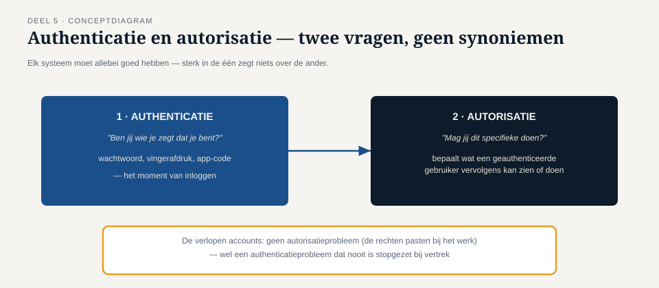
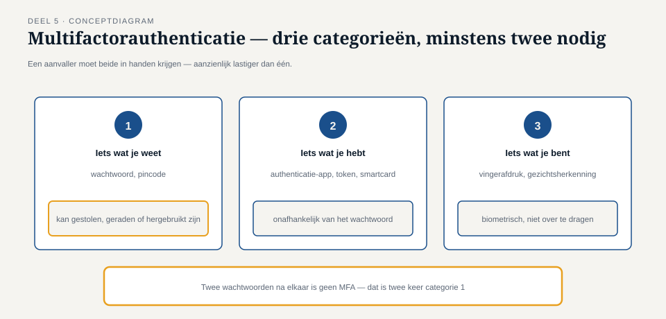
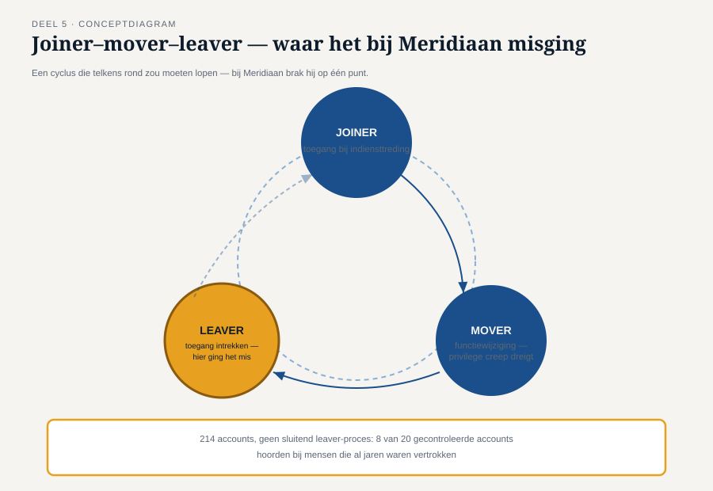

Deel 5 — Toegang en identiteit
Slidedeck · Ductus-cursus Informatiebeveiliging en privacy · niveau 1 · deel 5 van 10 · 26 slides
Slide 1 — Titel
Informatiebeveiliging en Privacy
Deel 5 · Niveau 1 · Fundament
Toegang en identiteit
Slide 2 — Terug naar het begin
Deel 1: 214 accounts, sinds 2019 niet opgeschoond.
Steekproef van twintig: acht horen bij oud-medewerkers.
Vandaag: waarom, en wat doe je eraan.
Slide 3 — Twee vragen, geen synoniemen
Authenticatie — ben jij wie je zegt te zijn?
Autorisatie — mag jij dit, gegeven wie je bent?

Slide 4 — Waarom dit onderscheid ertoe doet
Goede authenticatie + slechte autorisatie
= iedereen die inlogt kan alles.
Goede autorisatie + slechte authenticatie
= zinloos fijnmazig model, want de deur staat op een kier.
Slide 5 — Opdracht 5.1
Vier situaties. Authenticatie, autorisatie, of allebei?
Slide 6 — Multifactorauthenticatie

- Iets wat je weet
- Iets wat je hebt
- Iets wat je bent
Minstens twee categorieën, niet twee keer dezelfde.
Slide 7 — De valkuil
Twee wachtwoorden na elkaar = géén MFA.
Zelfde categorie, tweemaal.
Slide 8 — Waarom MFA werkt
Terug naar deel 2: de mens als ontwerpvariabele.
MFA gaat er niet van uit dat niemand ooit een wachtwoord verliest.
Het beperkt de impact als dat toch gebeurt.
Slide 9 — Opdracht 5.2
Vier inlogmethoden. MFA of niet? Waarom (niet)?
PAUZE
Slide 10 — Least privilege
Niet meer rechten dan strikt nodig.
(lezen / schrijven / wijzigen / verwijderen)
Slide 11 — Need-to-know
Niet meer inzicht in gegevens dan strikt nodig.
Ongeacht welke rechten daarbij horen.
Slide 12 — Twee aparte vragen
Iemand kan legitiem "alleen lezen" hebben (least privilege ✓)
en toch veel te veel dossiers kunnen inzien (need-to-know ✗).
Slide 13 — Opdracht 5.3
Klantenservice met volledige leestoegang.
Least privilege? Need-to-know? Waarom verschillend antwoord?
Slide 14 — Functiescheiding
Een gevoelige taak opgeknipt over meerdere mensen.
Niemand kan het proces alleen manipuleren.
Slide 15 — Klassiek voorbeeld
Wie een betaling aanmaakt ≠ wie hem goedkeurt.
Bij Meridiaan: bankrekeningwijziging + uitbetaling
niet door dezelfde persoon.
Slide 16 — Opdracht 5.4
Ontwerp een functiescheiding voor bankrekeningwijzigingen.
Slide 17 — Joiner–Mover–Leaver

Drie momenten waarop toegang zou moeten veranderen.
Slide 18 — Het minst zichtbare risico
Mover: nieuwe rechten erbij, oude nooit ingetrokken.
= privilege creep
Vaker vergeten dan leaver, want minder zichtbaar.
Slide 19 — Waar het bij Meridiaan misging
Leaver: geen sluitend proces tussen HR-uitstroom en IT.
Acht accounts, zeven jaar in het ergste geval.
Slide 20 — Opdracht 5.5
Bedenk zelf een mover-probleem en een joiner-probleem bij Meridiaan.
Slide 21 — De autorisatiematrix
Wie heeft welke rechten op welk systeem — per rol.
Rolgebaseerd (RBAC) i.p.v. individueel uitzoeken.
Slide 22 — Recertificatie
Periodiek: een leidinggevende loopt de matrix na.
Zonder matrix: geen recertificatie mogelijk.
Precies wat bij Meridiaan ontbrak.
Slide 23 — Merels drieslag
- Symptoom: acht accounts direct deactiveren
- Wortel van dit probleem: alle 214 controleren
- Structureel: leaver-proces + autorisatiematrix
Slide 24 — Onthoud deze drieslag
Komt terug — op grotere schaal, onder tijdsdruk —
bij het datalek in deel 19.
Slide 25 — Opdracht 5.6
Pas de drieslag toe op een eigen voorbeeld.
Slide 26 — Vooruitblik
Deel 6: cryptografie voor niet-cryptografen